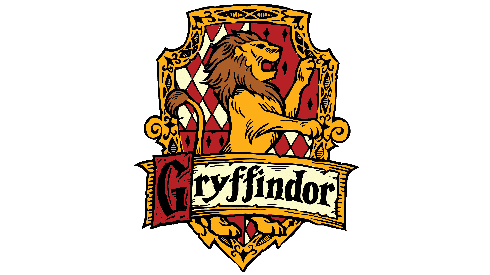
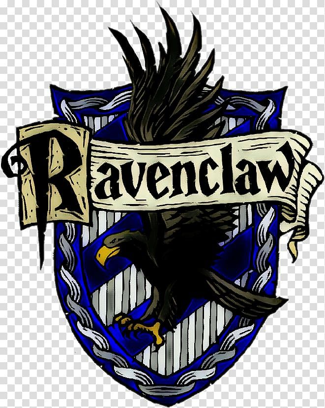
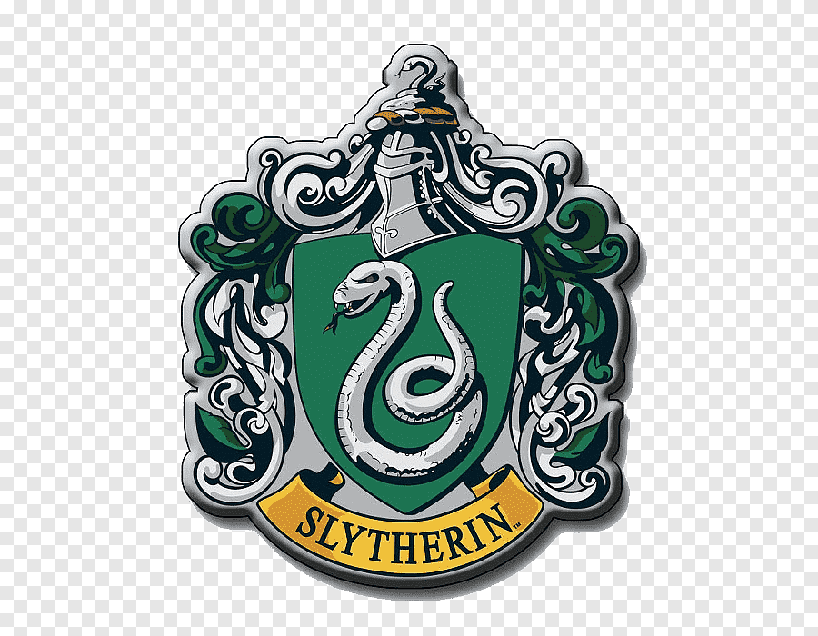

Gryffindor
Nilai asrama Gryffindor adalah keberanian, kesetiaan, tekad kuat, dan memiliki sifat kepahlawanan. Lambang asrama adalah singa, dan warna asrama adalah merah dan emas. Kepala asramanya adalah guru Transfigurasi, Minerva McGonagall, dan hantu asramanya adalah Sir Nicholas de Mimsy-Porpington, yang lebih dikenal sebagai Nick Si Kepala Nyaris Putus. Pendiri asramanya adalah Godric Gryffindor. Ruang rekreasi Gryffindor terletak di salah satu menara benteng tertinggi, pintu masuk yang terletak di lantai tujuh di sayap timur kastil dan dijaga oleh sebuah lukisan Nyonya Gemuk, yang mengenakan gaun merah muda. Dia mengizinkan siswa masuk hanya setelah siswa itu dapat memberikan kata kunci yang benar, seperti yang diketahui dalam buku yang ketiga, ketika Sirius Black mencoba memaksa masuk ke menara, hanya untuk dicegah masuk oleh Nyonya Gemuk setelah ia tidak bisa memberikan kata kunci yang benar. Dalam buku pertama, Neville Longbottom cenderung lupa kata kunci dan harus menunggu di dekat lukisan itu sampai siswa Gryffindor lainnya tiba untuk membukakan jalan baginya
Hufflepuff

Nilai asrama Hufflepuff adalah kerja keras, toleransi, loyalitas, dan keadilan. Lambang asrama adalah luak, dan warna asrama adalah kuning kenari dan hitam tengah malam. Kepala asramanya adalah guru Herbologi, Pomona Sprout, dan hantu asramanya adalah Si Rahib Gemuk The Fat Friar. Menurut Rowling, Hufflepuff memiliki hubungan dengan elemen bumi. Pendiri asrama ini adalah Helga Hufflepuff. Asrama-asrama Hufflepuff dan ruangan umumnya terletak di suatu tempat di ruang bawah tanah. Pintu masuk ditemukan di belakang sebuah lukisan hidup di suatu tempat di dekat dapur, kata kunci diperlukan untuk masuk. Ruang rekreasi Hufflepuff diisi dengan hiasan kuning dan kursi-kursi empuk berlengan dan memiliki terowongan bawah tanah yang mengarah ke asrama, yang semuanya memiliki pintu bulat sempurna, seperti penutup drum (mirip seperti sarang luak).
Ravenclaw
Nilai asrama Ravenclaw adalah kecerdasan, kreativitas, kegemaran belajar, dan kecantikan/ketampanan. Lambang asramanya adalah seekor elang dan lambang warnanya adalah biru dan perunggu (biru dan abu-abu). Kepala asramanya adalah profesor Filius Flitwick, dan hantu asramanya adalah The Lady Grey. Menurut Rowling, Ravenclaw berhubungan erat dengan elemen udara. Pendiri asramanya adalah Rowena Ravenclaw. Asrama-asrama Ravenclaw berlokasi di Menara Ravenclaw di sisi barat sekolah. Ruangan rekreasinya, seperti yang diungkapkan pada klimaks dari seri Deathly Hallows, berbentuk bulat dan penuh dengan hiasan biru dan kursi-kursi empuk, memiliki langit-langit berbentuk kubah yang dicat dengan bentuk bintang-bintang dan fitur patung replika Rowena yang sedang mengenakan mahkotanya. Harry juga mencatat bahwa, pada siang hari, anak-anak Ravenclaw "akan memiliki pemandangan spektakuler dari pegunungan sekitarnya." Sebuah teka-teki logis harus diselesaikan untuk mendapatkan izin masuk, sedangkan ruang rekreasi Gryffindor, Hufflepuff dan Slytherin hanya membutuhkan kata kunci, hal ini menunjukkan bahwa mungkin akan menjadi lebih mudah bagi siswa dari asrama-asrama lain yang memiliki tingkat kecerdasan yang tinggi untuk memasuki ruang rekreasi Ravenclaw dibandingkan dengan asrama yang lain . Profesor McGonagall, kepala asrama Gryffindor, berhasil memecahkan teka-teki itu dengan akurat.
Slytherin
Nilai asrama Slytherin adalah ambisi, idealis, kepemimpinan, kecerdikan, dan yang paling penting adalah memiliki darah penyihir murni. Lambang asrama Slytherin adalah ular, dan warna asramanya adalah hijau dan perak. Pendiri asramanya adalah Salazar Slytherin. Kepala asramanya adalah Severus Snape sampai menjelang akhir buku keenam. Kemudian, Horace Slughorn, kepala asrama yang sebelumnya, muncul dari masa pensiunnya mengambil alih kembali otoritas yang pernah dimilikinya. Hantu asrama Slytherin adalah Si Baron Berdarah, The Bloody Baron.[7] Asrama Slytherin dan ruang rekreasinya dapat dicapai melalui sebuah dinding batu yang sederhana di bawah tanah. Ruang rekreasi Slytherin berbentuk panjang, rendah, seperti gaya ruang bawah tanah, yang terletak di bawah Danau Hogwarts, dilengkapi dengan lampu hijau dan kursi berukir yang berlengan. Ruangan ini dijelaskan dalam buku kedua sebagai memiliki cahaya kehijauan.